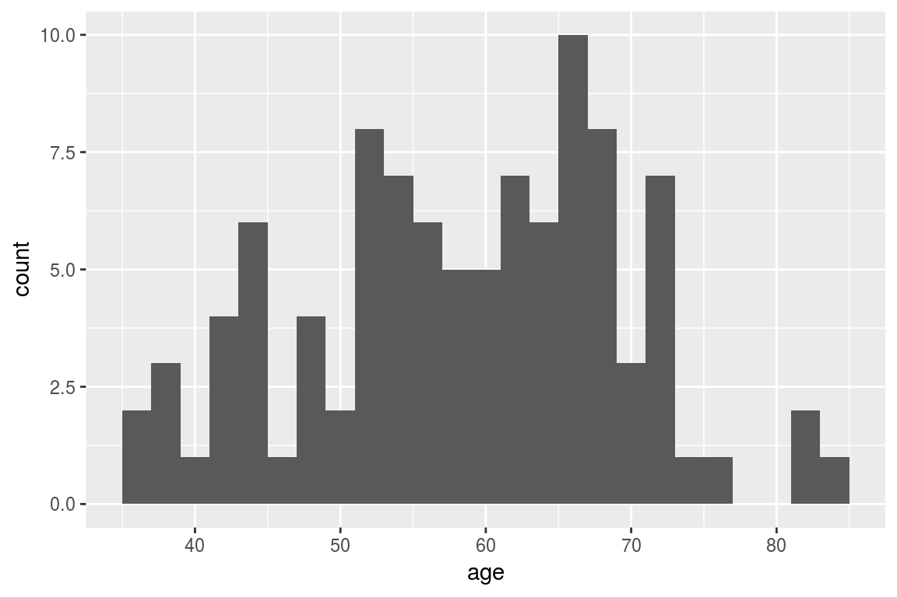
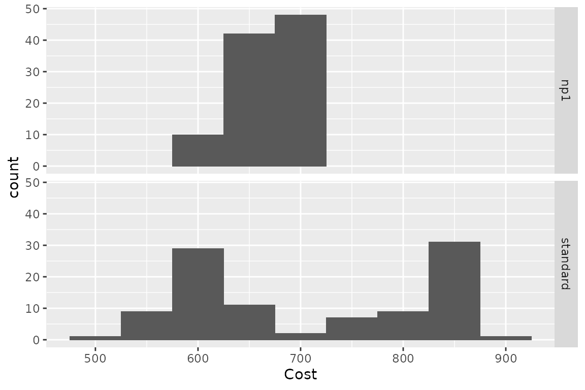
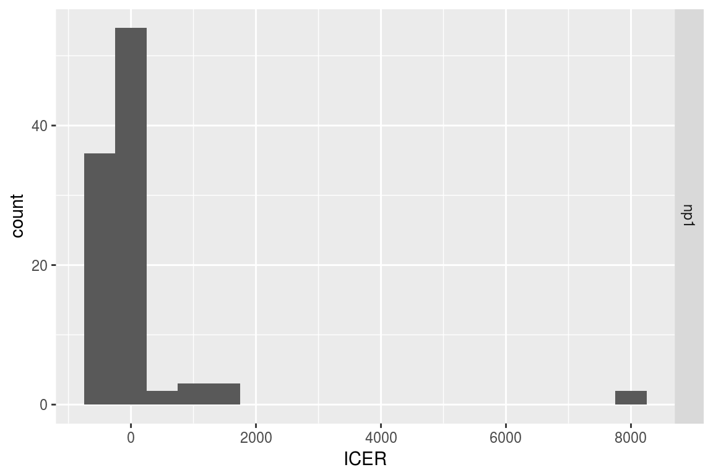
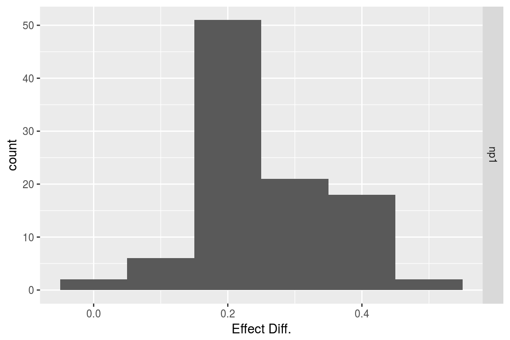
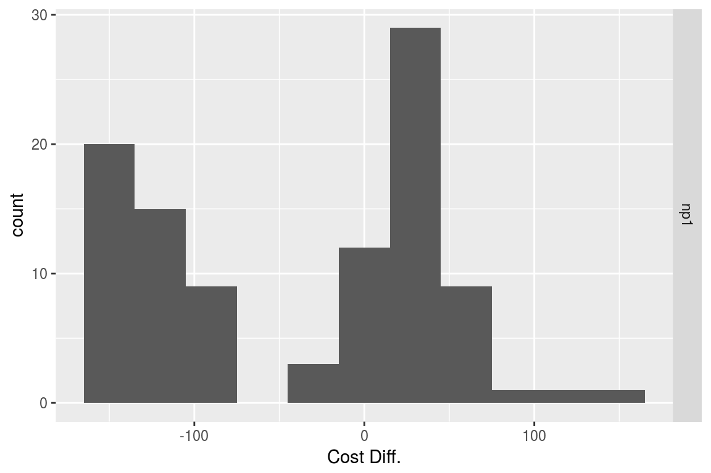
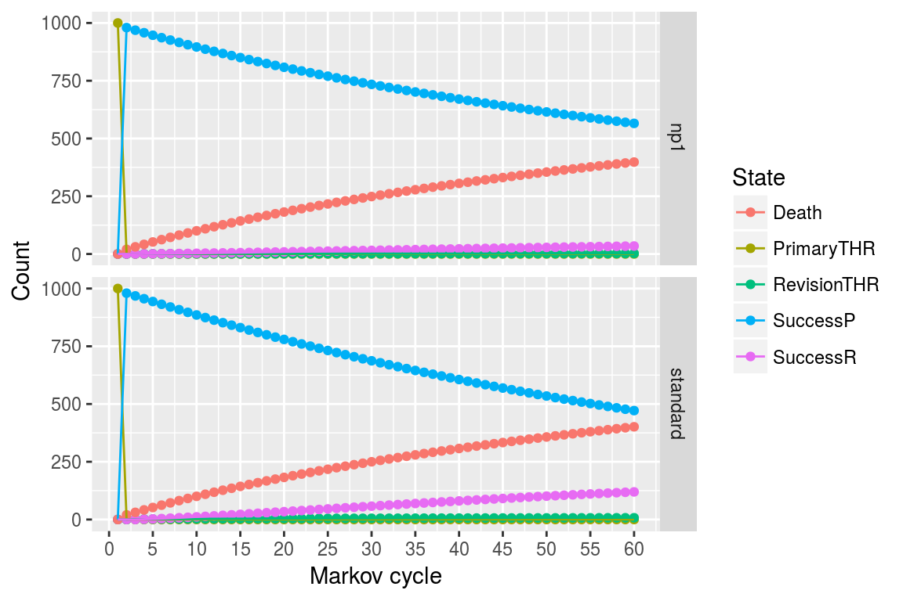

Heterogeneity & Demographic Analysis
2020-12-07
Source:vignettes/g_heterogeneity.Rmd
g_heterogeneity.RmdIntroduction
Heterogeneity analysis is a way to explore how the results of a model can vary depending on the characteristics of individuals in a population, and demographic analysis estimates the average values of a model over an entire population.
In practice these two analyses naturally complement each other: heterogeneity analysis runs the model on multiple sets of parameters (reflecting differents characteristics found in the target population), and demographic analysis combines the results.
For this example we will use the result from the assessment of a new total hip replacement previously described in vignette("d-non-homogeneous", "heemod").
Population characteristics
The characteristics of the population are input from a table, with one column per parameter and one row per individual. Those may be for example the characteristics of the indiviuals included in the original trial data.
For this example we will use the characteristics of 100 individuals, with varying sex and age, specified in the data frame tab_indiv:
tab_indiv## # A tibble: 100 x 2
## age sex
## <dbl> <int>
## 1 72 0
## 2 57 1
## 3 47 1
## 4 79 1
## 5 64 1
## 6 59 0
## 7 56 1
## 8 51 1
## 9 55 1
## 10 48 1
## # … with 90 more rows
library(ggplot2)
ggplot(tab_indiv, aes(x = age)) +
geom_histogram(binwidth = 2)
Running the analysis
res_mod, the result we obtained from run_model() in the Time-varying Markov models vignette, can be passed to update() to update the model with the new data and perform the heterogeneity analysis.
res_h <- update(res_mod, newdata = tab_indiv)## No weights specified in update, using equal weights.## Updating strategy 'standard'...## Updating strategy 'np1'...Interpreting results
The summary() method reports summary statistics for cost, effect and ICER, as well as the result from the combined model.
summary(res_h)## An analysis re-run on 100 parameter sets.
##
## * Unweighted analysis.
##
## * Values distribution:
##
## Min. 1st Qu. Median Mean
## standard - Cost 485.85297365 605.0062810 665.3485485 709.3246985
## standard - Effect 9.32287610 25.5696426 27.3769142 25.9223698
## standard - Cost Diff. - - - -
## standard - Effect Diff. - - - -
## standard - Icer - - - -
## np1 - Cost 603.34263272 635.5509751 652.9595311 665.2789877
## np1 - Effect 9.38064927 25.8299343 27.7656911 26.1991126
## np1 - Cost Diff. -164.88137326 -129.4829089 -12.3890174 -44.0457108
## np1 - Effect Diff. 0.04405769 0.1948185 0.2294328 0.2767428
## np1 - Icer -354.32431375 -333.0519971 -57.5010098 -14.4804811
## 3rd Qu. Max.
## standard - Cost 828.5434528 878.0433890
## standard - Effect 29.0749005 30.9442824
## standard - Cost Diff. - -
## standard - Effect Diff. - -
## standard - Icer - -
## np1 - Cost 699.0605439 713.1620157
## np1 - Effect 29.5008365 31.3132009
## np1 - Cost Diff. 30.5446941 117.4896591
## np1 - Effect Diff. 0.3887769 0.4653403
## np1 - Icer 156.7853582 2666.7229585
##
## * Combined result:
##
## 2 strategies run for 60 cycles.
##
## Initial state counts:
##
## PrimaryTHR = 1000L
## SuccessP = 0L
## RevisionTHR = 0L
## SuccessR = 0L
## Death = 0L
##
## Counting method: 'beginning'.
##
## Values:
##
## utility cost
## standard 25922.37 709324.7
## np1 26199.11 665279.0
##
## Efficiency frontier:
##
## np1
##
## Differences:
##
## Cost Diff. Effect Diff. ICER Ref.
## np1 -44.04571 0.2767428 -159.1576 standardThe variation of cost or effect can then be plotted.
plot(res_h, result = "effect", binwidth = 5)
plot(res_h, result = "cost", binwidth = 50)
plot(res_h, result = "icer", type = "difference",
binwidth = 500)
plot(res_h, result = "effect", type = "difference",
binwidth = .1)
plot(res_h, result = "cost", type = "difference",
binwidth = 30)
The results from the combined model can be plotted similarly to the results from run_model().
plot(res_h, type = "counts")
Weighted results
Weights can be used in the analysis by including an optional column .weights in the new data to specify the respective weights of each strata in the target population.
tab_indiv_w## # A tibble: 100 x 3
## age sex .weights
## <dbl> <int> <dbl>
## 1 49 0 0.349
## 2 43 1 0.496
## 3 46 0 0.464
## 4 50 1 0.140
## 5 60 0 0.689
## 6 72 1 0.701
## 7 76 0 0.310
## 8 32 0 0.606
## 9 66 1 0.995
## 10 52 0 0.0830
## # … with 90 more rows
res_w <- update(res_mod, newdata = tab_indiv_w)## Updating strategy 'standard'...## Updating strategy 'np1'...
res_w## An analysis re-run on 100 parameter sets.
##
## * Weigths distribution:
##
## Min. 1st Qu. Median Mean 3rd Qu. Max.
## 0.001646 0.225811 0.494941 0.481800 0.688243 0.995432
##
## Total weight: 48.18
##
## * Values distribution:
##
## Min. 1st Qu. Median Mean
## standard - Cost 450.15881156 590.0441537 626.9720129 674.9746646
## standard - Effect 4.02754331 22.2194037 25.6577436 24.7544752
## standard - Cost Diff. - - - -
## standard - Effect Diff. - - - -
## standard - Icer - - - -
## np1 - Cost 593.80297968 631.4875810 641.5229814 655.5881348
## np1 - Effect 4.03810992 22.3561826 25.8893365 24.9948520
## np1 - Cost Diff. -164.88137326 -81.4171250 14.5509685 -19.3865298
## np1 - Effect Diff. 0.01056661 0.1721907 0.2122929 0.2403767
## np1 - Icer -354.32431375 -278.9894047 82.0897023 233.3046246
## 3rd Qu. Max.
## standard - Cost 761.4317051 8.780434e+02
## standard - Effect 29.0459530 3.176922e+01
## standard - Cost Diff. - -
## standard - Effect Diff. - -
## standard - Icer - -
## np1 - Cost 680.0145801 7.131620e+02
## np1 - Effect 29.2544960 3.200783e+01
## np1 - Cost Diff. 41.4434274 1.436442e+02
## np1 - Effect Diff. 0.2918287 4.653403e-01
## np1 - Icer 240.6833019 1.347275e+04
##
## * Combined result:
##
## 2 strategies run for 60 cycles.
##
## Initial state counts:
##
## PrimaryTHR = 1000L
## SuccessP = 0L
## RevisionTHR = 0L
## SuccessR = 0L
## Death = 0L
##
## Counting method: 'beginning'.
##
## Values:
##
## utility cost
## standard 24754.48 674974.7
## np1 24994.85 655588.1
##
## Efficiency frontier:
##
## np1
##
## Differences:
##
## Cost Diff. Effect Diff. ICER Ref.
## np1 -19.38653 0.2403767 -80.65061 standardParallel computing
Updating can be significantly sped up by using parallel computing. This can be done in the following way:
- Define a cluster with the
use_cluster()functions (i.e.use_cluster(4)to use 4 cores). - Run the analysis as usual.
- To stop using parallel computing use the
close_cluster()function.
Results may vary depending on the machine, but we found speed gains to be quite limited beyond 4 cores.